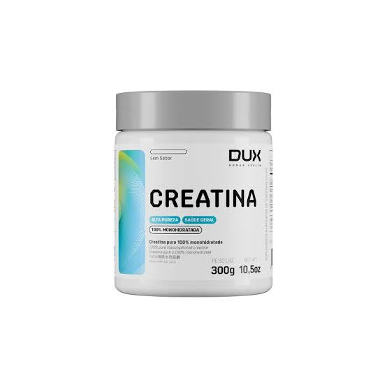

A creatina é uma substância natural formada por três aminoácidos (arginina, glicina e metionina) que o corpo produz e também consome em alimentos como carnes. Ela age como uma reserva rápida de energia para os músculos e o cérebro, ajudando a melhorar a força e o rendimento físico.